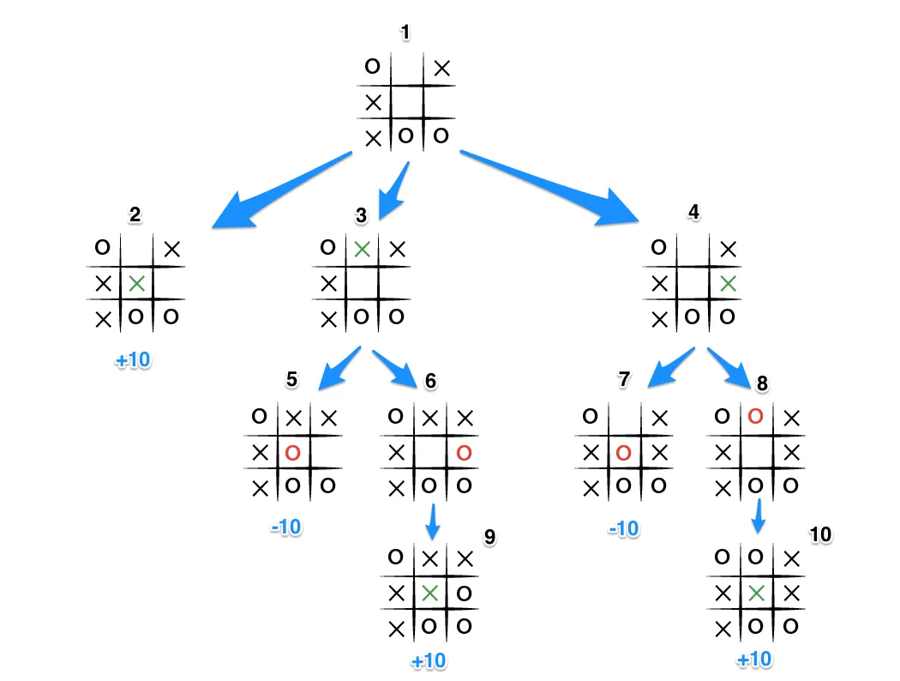

Introduction :
I was interested in artificial intelligence. So I challenged myself to make an artificial intelligence that wins every time at tic tac toe. First of all, how to do it? I read a lot about artificial intelligence. Here, there are two types of AI particularly interesting:
- Reinforcement learning : basically, we let the AI learn by itself, if it wins, we reward it. (it’s very schematized).
The problem is that the AI has to play a lot for it to be reliable. So in theory it can make mistakes if it is not trained enough.
- AI with Minimax: Minimax is a basic decision making algorithm. It is simple to set up and will allow the AI to always make the right decision. Before playing each move, the AI will look at all the possibilities of the game to choose the best one. In a game like tic-tac-toe there are not many possibilities so the AI can study them all. The advantage is that the AI will never make a mistake because it will know all the possible situations. In tic-tac-toe, if you don’t make a mistake you can’t lose and you’ll make a tie at worst. If your opponent makes a mistake, you win. This algorithm is very useful, but it cannot be used in poker, for example, because there are too many possible hands. It will then be necessary to turn to Reinforcement learning because even if there will be a margin of error, the AI will learn and become stronger and stronger. Minimax optimization exists to use minimax even if there is many possibilities like the Depth Limited Minimax
But before making an AI, we need a tic tac toe game !
Tic tac toe !
The different steps of tic-tac-toe : -Set up the graphical interface (with pygame) -Player 1 chooses where he wants to play -We check if the location is available -We draw the O or the X -We check for a win or a tie -Player 2’s turn
First, i made a class Game() which creates a matrix full of “-1” because all spaces are available. We set the player turns number to 0 (because player one will start, we can switch it to 1 if we want player 2 to start).
1
2
3
4
5
6
7
8
9
class Game():
pygame.init()
blue=(20,189,172)
screen=pygame.display.set_mode((600,600))
pygame.display.set_caption("tic tac toe")
screen.fill(blue)
def __init__(self):
self.board=[ [-1,-1,-1] for i in range(3)]
self.player_number=0
We add a “show_board()” function to display the matrix.
1
2
3
def show_board(self):
for i in self.board:
print(i)
We create a “add_piece” function to add the new piece to the matrix
1
2
3
4
5
6
def add_piece(self,player_number):
new_piece=self.user_play()
if player_number==0:
self.board[new_piece[0]][new_piece[1]]="X"
else:
self.board[new_piece[0]][new_piece[1]]="O"
“add_piece” calls “user_play()” which is a big function who let the user where he wants to play, who let the AI choose where to play and who check if the choosen space is available.
1
2
3
4
5
6
7
8
9
10
11
12
13
14
15
16
17
18
19
20
21
22
23
24
25
26
27
28
29
30
def user_play(self):
print(f"Player {self.player_number+1}, choose where do you place your piece (0,0)")
#res=input(">>")
while 1:
has_played=False
for event in pygame.event.get():
if event.type==pygame.QUIT:
exit()
if self.player_number==1:
moove=self.MM(self.board,False,self.player_number)[1]
column=moove[0]
line=moove[1]
has_played=True
self.show_board()
print(f"Choosen : ({line},{column})")
if event.type==pygame.MOUSEBUTTONDOWN or has_played:
if has_played==False:
mouseX=event.pos[0]
mouseY=event.pos[1]
column=int(mouseY//200)
line=int(mouseX//200)
if self.can_draw(line,column):
if self.player_number==1:
self.draw_circle(line,column)
elif self.player_number==0:
self.draw_cross(line,column)
return (int(column),int(line))
else:
print("Not here")
If the player number is 1 we can the MM() function which is the minimax algorithm but we will come back to this later. If the player number is 0 we wait for a user click. We divide the coordinates by 200 to have the correspondant box. We check if the box is available thanks to the “can_draw function”. If the box is available we draw the correpondant letter.
The “can_draw()” function will simply check if an box is available so if matrix[x][y] is equal to -1.
1
2
3
4
def can_draw(self,y,x):
if self.board[x][y]!=-1 :
return False
return True
Now, a player can draw a new letter. Remember of our differents steps ! After the new piece we have to check if someone won.
Let’s make a “check_win()” function
this is a rather long but simple function. We look at all the possibilities of victory. We use pass the game_board as argument because our minimax algorithm will check the win for all possible gameboards, “game_board=0” means that if we don’t specify the game_board parameter then we check the current gameboard
1
2
3
4
5
6
7
8
9
10
11
12
13
14
15
16
17
18
19
20
21
22
23
24
25
26
27
28
29
30
def check_win(self,game_board=0):
if game_board==0:
game_board=self.board
for i in game_board:
if i.count("X")==3:
return 0
elif i.count("O")==3:
return 1
if (game_board[0][0]=="X" and game_board[0][1]=="X" and game_board[0][2]=="X") or (game_board[1][0]=="X" and game_board[1][1]=="X" and game_board[1][2]=="X") or (game_board[2][0]=="X" and game_board[2][1]=="X" and game_board[2][2]=="X"):
return 0
elif (game_board[0][0]=="O" and game_board[0][1]=="O" and game_board[0][2]=="O") or (game_board[1][0]=="O" and game_board[1][1]=="O" and game_board[1][2]=="O") or (game_board[2][0]=="O" and game_board[2][1]=="O" and game_board[2][2]=="O"):
return 1
if (game_board[0][0]=="X" and game_board[1][1]=="X" and game_board[2][2]=="X") or (game_board[0][2]=="X" and game_board[1][1]=="X" and game_board[2][0]=="X"):
return 0
elif (game_board[0][0]=="O" and game_board[1][1]=="O" and game_board[2][2]=="O") or (game_board[0][2]=="O" and game_board[1][1]=="O" and game_board[2][0]=="O"):
return 1
if (game_board[0][0]=="X" and game_board[1][0]=="X" and game_board[2][0]=="X") or (game_board[0][1]=="X" and game_board[1][1]=="X" and game_board[2][1]=="X") or (game_board[0][2]=="X" and game_board[1][2]=="X" and game_board[2][2]=="X"):
return 0
elif (game_board[0][0]=="O" and game_board[1][0]=="O" and game_board[2][0]=="O") or (game_board[0][1]=="O" and game_board[1][1]=="O" and game_board[2][1]=="O") or (game_board[0][2]=="O" and game_board[1][2]=="O" and game_board[2][2]=="O"):
return 1
if self.is_full():
return 3
return -1
We return 0 if player 1 won, 1 if player 2 won, 3 if the gameboard is full (tie) and -1 if nobody won.
We check if the gameboard is full with the “is_full()” function :
1
2
3
4
5
6
7
8
def is_full(self,game_board=0):
if game_board==0:
game_board=self.board
for i in game_board:
if i.count(-1)!=0:
return False
return True
Let’s look at our different steps and now we just have to do the same thing again but for the next player!
We can therefore launch our game in the following way:
1
2
3
4
5
6
7
8
9
10
11
12
13
14
15
16
17
18
19
20
21
22
23
24
25
26
27
28
29
30
31
play=Game()
while True:
for event in pygame.event.get():
if event.type==pygame.QUIT:
exit()
lines(play.screen)
play.show_board()
pygame.display.update()
play.add_piece(play.player_number)
state=play.check_win()
play.player_number=(play.player_number+1)%2 #We add 1 to the player number to change the turn.
my_font = pygame.font.SysFont('Comic Sans MS', 140)
if state!=-1:
print(f"Player {state+1} won !" if state!=3 else "Tie !")
play.show_board()
if state==0:
text_surface = my_font.render('You won', False, (255, 255, 255))
elif state==1:
text_surface = my_font.render('AI won', False, (255,255,255))
else:
text_surface = my_font.render('Tie', False, (255, 255 ,255))
Game.screen.blit(text_surface, (150,150))
pygame.display.update()
sleep(5)
break
We have a tic tac toe game !
The minimax algorithm
The implementation is quite simple.
We check all the possibilities. One player will maximize and the other one wil minimize. What does that mean ?
After checking a possibilities, if this possibilities result of a win for us and we are maximazing so this possibilities will be qual to +1. If a possibilities result of a loose for us, this possibilities will be equel to -1. In case of a tie, the possibilities will be equal to 0. Because we are maximazing, we will choose a random a possibility equal to +1.
Look at this image to understand better (The exemple maximize with +10 and minimize with -10 but it’s exactly the same ):

1
2
3
4
5
6
7
8
9
10
11
12
13
14
15
16
17
18
19
20
21
22
23
24
25
26
27
28
29
30
31
32
33
34
35
36
37
38
39
40
41
42
43
44
def MM(self, game_board, is_maximazing,player_number):
won=self.check_win(game_board)
if won==0:
#P0 won -> maximazing
return 1,0
if won==1:
#P1 won -> minimazing
return -1,0
elif self.is_full(game_board):
#Tie -> neutral
return 0,0
if is_maximazing:
best_moove_number = float('-inf')
best_move = (0,0)
possibles_mooves = self.get_possible_places(game_board)
for (line, col) in possibles_mooves:
temp_board = copy.deepcopy(game_board)
temp_board[line][col]='X' if player_number==0 else "O"
MM_status = self.MM(temp_board, False,(player_number+1)%2)[0]
print(MM_status)
if MM_status > best_moove_number:
best_moove_number = MM_status
best_move = (line, col)
return best_moove_number, best_move
elif (is_maximazing)==False:
best_moove_number = float('+inf')
best_move = (0,0)
possibles_mooves =self.get_possible_places(game_board)
for (line, col) in possibles_mooves:
temp_board = copy.deepcopy(game_board)
temp_board[line][col]='X' if player_number==0 else "O"
MM_status = self.MM(temp_board, True,(player_number+1)%2)[0]
print(MM_status)
if MM_status < best_moove_number:
best_moove_number = MM_status
best_move = (line, col)
return best_moove_number, best_move
MM take as argument a gameboard, True or False (if we are maximazing or not) and the current player number.
The function will call itself recursively and generate a new board until it gets a win, then choose the best move based on the current state.
Here, we use get_possible_places() to get all available boxes of a gameboard.
1
2
3
4
5
6
7
def get_possible_places(self,game_board):
places=[]
for i in range(len(game_board)):
for j in range(len(game_board[i])):
if game_board[i][j]==-1:
places.append((i,j))
return places
We also use copy.deepcopy(game_board) to copy the current gameboard and modify it without changing the current board. Because with python if you make gameboard2=gameboard and you modify gameboard2 then gameboard can also be modified.
Conclusion
The complete code source is available on my github !